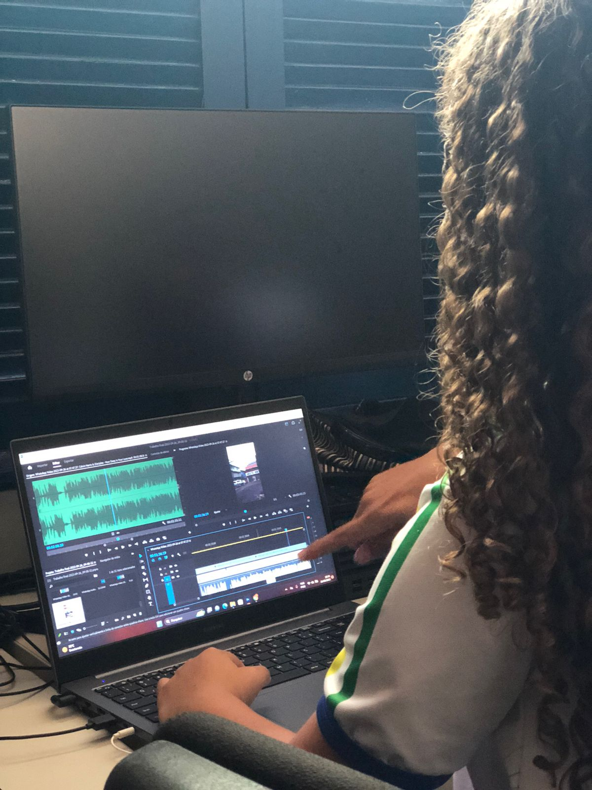

Editor de Vídeo
Sobre o curso:

O curso de "Editor de Vídeo" é um programa de formação que ensina habilidades relacionadas à edição de vídeo digital. Os participantes aprendem a usar software de edição de vídeo, como Adobe Premiere Pro, Final Cut Pro, ou outros aplicativos semelhantes, para cortar, ajustar, efeitos especiais, transições e aprimorar a qualidade visual e sonora de vídeos. Esses cursos geralmente abrangem tópicos como edição básica, correção de cor, edição de áudio e até mesmo técnicas avançadas de edição para produção de filmes, documentários, vídeos promocionais e muito mais. É uma habilidade valiosa para profissionais de mídia, produtores de conteúdo online, cineastas amadores e muitos outros que desejam criar vídeos de alta qualidade.
O que se aprende neste curso?
Em um curso de edição de vídeo, você pode aprender uma variedade de habilidades e conceitos, que podem incluir:
• Uso de Software de Edição: Aprender a usar programas populares de edição de vídeo, como Adobe Premiere Pro, Final Cut Pro, ou DaVinci Resolve.
• Edição Básica: Cortar, juntar e organizar clipes de vídeo, bem como ajustar a ordem das cenas.
• Transições: Adicionar transições suaves entre os clipes para criar uma narrativa fluida.
• Efeitos Visuais: Incorporar efeitos visuais, como correção de cor, filtros, sobreposições e animações.
• Áudio: Trabalhar com trilhas sonoras, adicionar e ajustar áudio, aplicar efeitos sonoros e mixar áudio.
• Animação: Criar animações simples, como textos animados, títulos e gráficos em movimento.
• Narrativa: Entender os princípios de contar histórias por meio da edição de vídeo, como a estrutura de três atos.
• Exportação e Formatos: Aprender a exportar vídeos em diferentes formatos e qualidades para diferentes plataformas, como YouTube ou redes sociais.
• Trabalho de Equipe: Colaborar com outros profissionais de mídia, como cinegrafistas e designers gráficos.
• Práticas Profissionais: Compreender os aspectos éticos, legais e de direitos autorais relacionados à edição de vídeo.